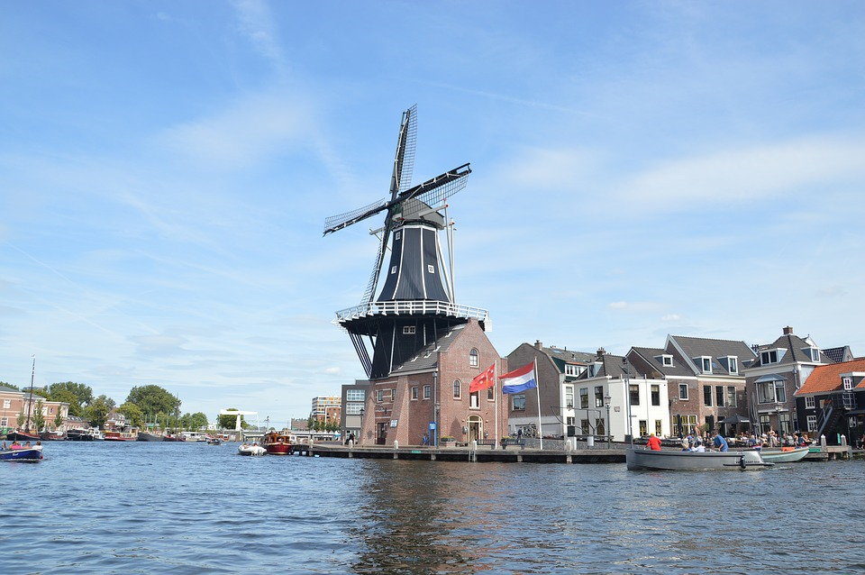
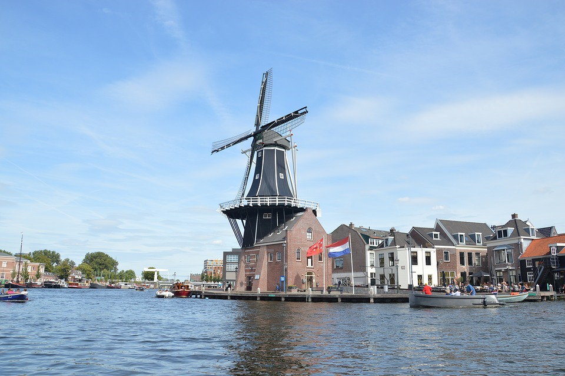

Haarlem is one of the medium-sized cities in the Randstad. The municipality of Haarlem includes the city of Haarlem and the western part of the village of Spaarndam. Haarlem has 161,265 inhabitants, making it the largest city in North Holland after Amsterdam and the twelfth largest municipality in the Netherlands. The metropolitan agglomeration of Haarlem (Haarlem, Heemstede, Bloemendaal and Zandvoort) has approximately 230,000 inhabitants, and the city region of Haarlem (Zuid-Kennemerland and IJmond) more than 430,000 habitants. Haarlem is mentioned for the first time in a document from the 10th century. In 1245 it received city rights from Willem II of Holland. By the end of the Middle Ages, Haarlem had become one of the most important cities in Holland. In the Early Modern Period, the city developed industrially as a textile city and culturally as a painter's city.
Haarlem
 
